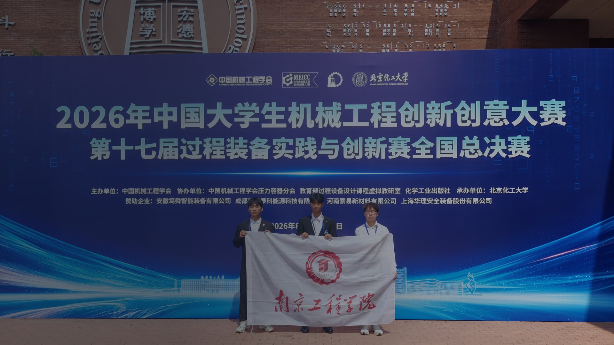
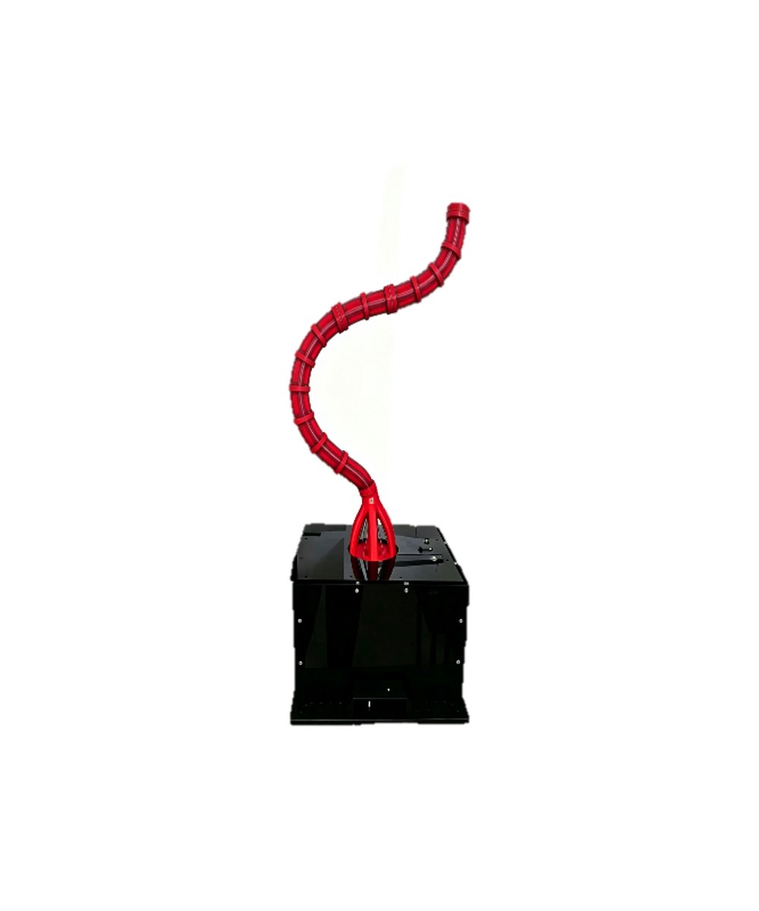
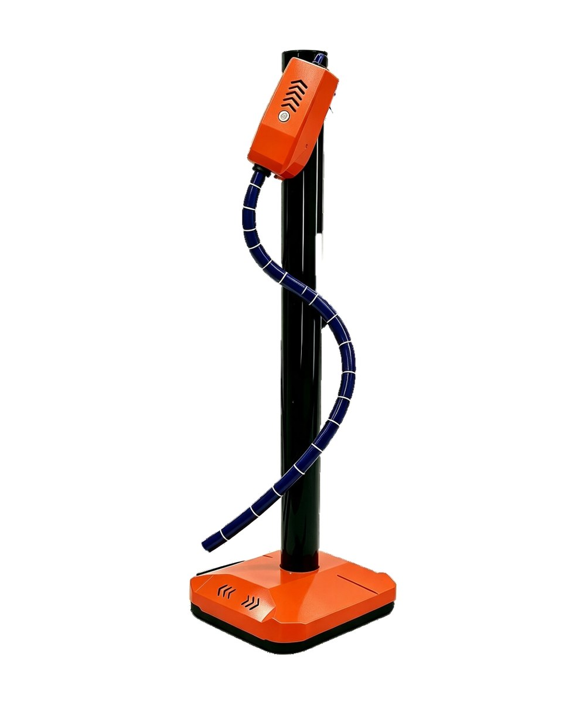
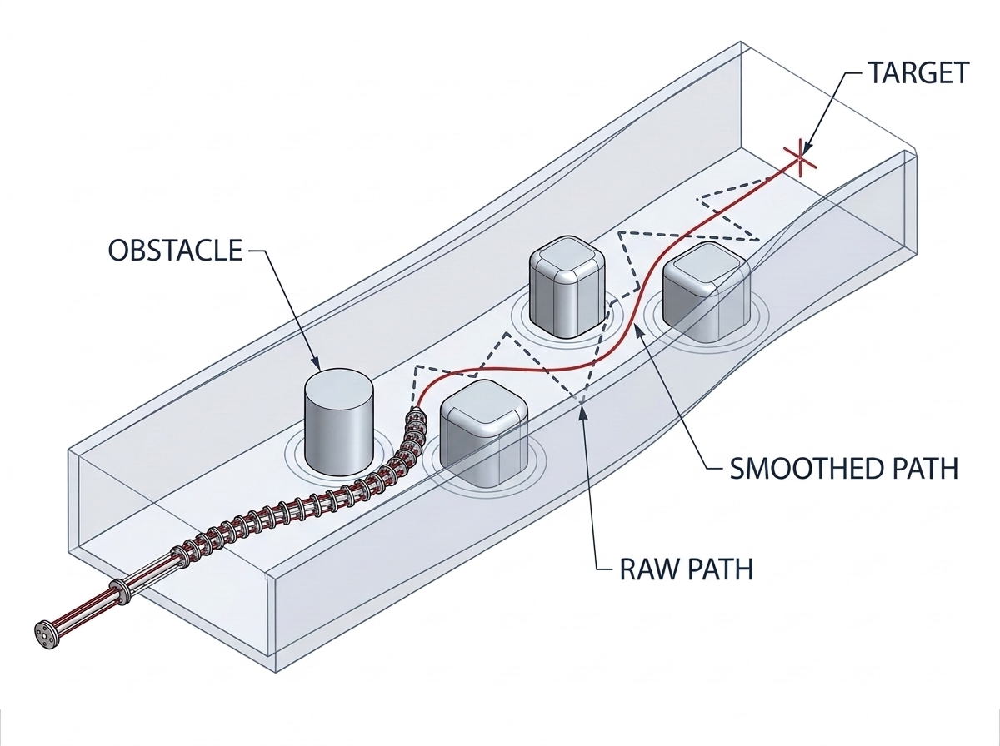
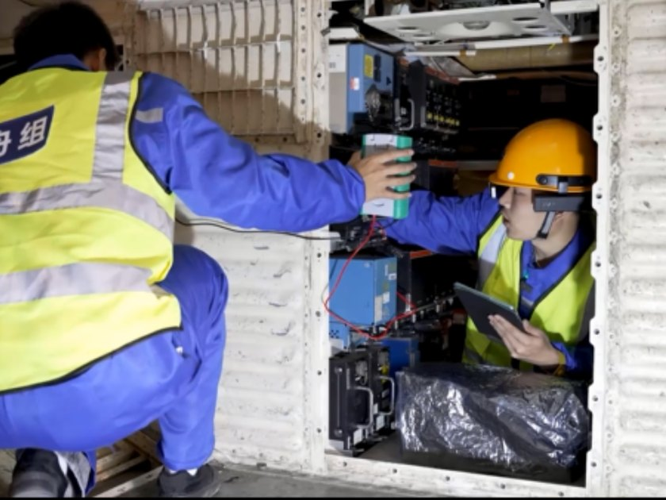
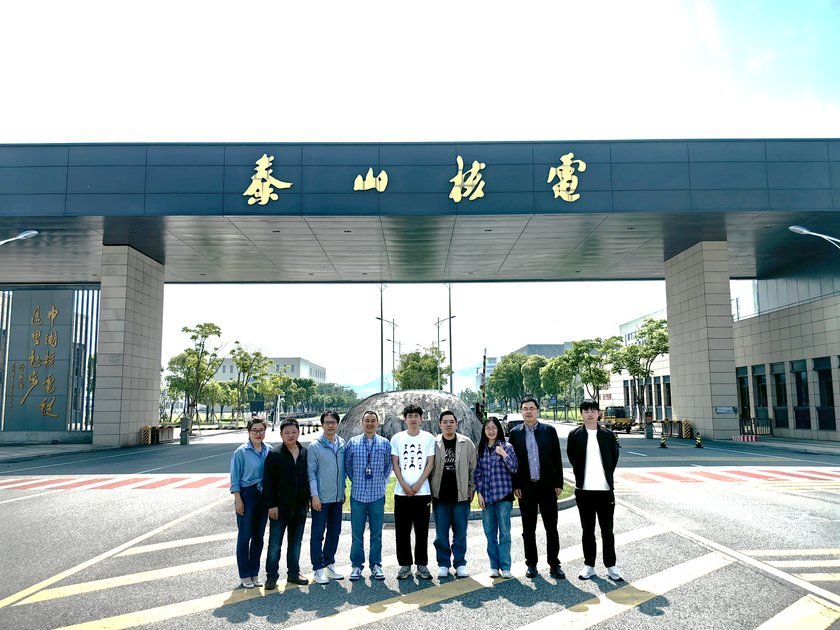
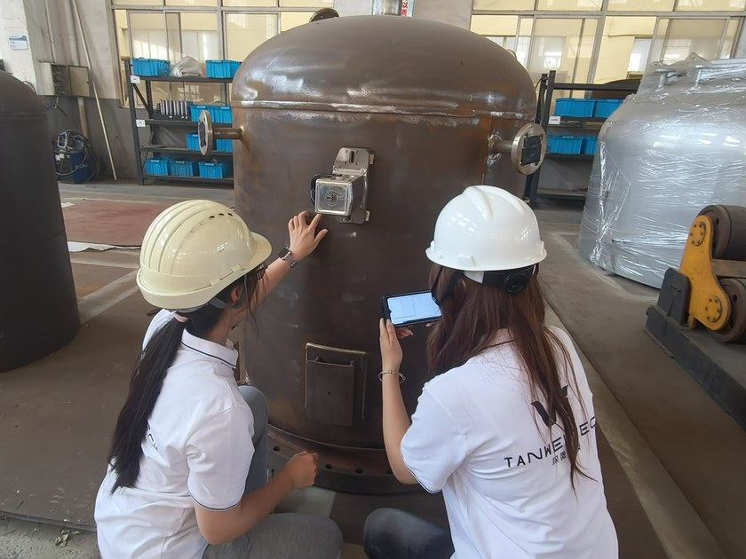

超细长重载柔性机械臂 · 混天绫系列
化绕指柔为百炼钢
在役装备狭小腔体原位无损检测
50.6 极限长径比 + 6.0 kg 末端重载 + ±0.6 mm 重复定位精度。从 30–60 mm 检修口直接伸入航空隔框、核电储罐与石化压力容器，免拆解完成全域无损探伤与作业。
50.6 极限长径比 + 6.0 kg 末端重载 + ±0.6 mm 重复定位精度。从 30–60 mm 检修口直接伸入航空隔框、核电储罐与石化压力容器，免拆解完成全域无损探伤与作业。

利用原有手孔、人孔与检修口伸入高危密闭腔体，20–30 分钟出具定量检测报告，单次检测成本降低 87%，设备在役寿命延长 30%。

Market Status & Industry Pain Points
我国航空、核电、石化、火电等领域的重大高端装备大都工作在高温、高压、高辐射或交变载荷等严苛工况中，其内部密闭隔框、储罐内腔、反应釜及异形管路的焊缝与结构微区极易随服役时间增加而产生裂纹、腐蚀或残余应力集中。根据行业统计，我国在役压力容器保有量超 439 万台、压力管道超 101 万公里，每年因设备内部隐患漏检或超期服役引发的非计划停机与安全事故代价高昂。因此，对在役高端装备内部狭小密闭腔体进行常态化、定量化的原位无损检测，是保障装备安全服役与科学延寿的核心前提。
然而，当前在役装备内部检修面临三大结构性难题：一是“钻不进”，检修口孔径往往仅 30–60 mm 且内部通道曲折多变，传统刚性机械臂无法进入；二是“检不全”，普通工业内窥镜仅能做定性肉眼观察，无法搭载重载超声、涡流或压痕探头进行定量测定；三是“行不稳”，传统柔性臂伸展后刚度骤降、段间耦合震荡严重，重载下定位精度迅速衰减。传统的“停机拆解、切割取样”不仅破坏设备完整性，更造成巨额停产损失。
目前国内高端柔性检测装备存在约 35% 的国产化缺口。因此，亟需一种兼具“超高长径比、高刚度高负载、毫米级精准定位”的原位无损检测柔性机械臂系统，在不拆一颗螺栓的前提下把检测探头与作业工具精准送达设备深腔，替代高危人工钻爬与破坏性拆解。
检修口仅几十毫米且内部隔框交错，刚性机械臂与常规检测设备无法穿过狭窄弯道抵达真实缺陷区。
软管内窥镜负载能力极弱，无法搭载超声、残余应力或打磨夹取工具，焊缝微区缺陷无法定量评估。
常规连续体臂随长度增加刚度急剧衰减、段间力学耦合严重，重载工况下末端下垂抖动，无法精准作业。
Product Display & Selection Matrix

“混天绫”超细长重载柔性机械臂系统
在役航空器、核电储罐与石化承压设备的结构完整性评价与缺陷检修，要求检测装备既能像软管一样柔顺穿过几十毫米的曲折检修孔，又能在抵达目标焊缝或微区后具备刚性机械臂的高承载与毫米级定位稳定性。
针对该行业难题，南京江鸟科技团队自主研发了“混天绫”系列变刚度索驱动连续体机器人系统。整套系统由内-中-外三层柔索机械臂本体、多电机逆反馈解耦驱动控制箱、V1.0 智能避障与轨迹规划上位机软件及模块化末端快换接口四部分组成。通过段内耦合、段间滑轮与球铰解耦设计，实现了 62–4300 N/m（70 倍）刚度瞬时调节与 5.2–6.0 kg 末端高负载；相较于传统停机拆罐检测，该系统可在不破坏设备结构的前提下，20–30 分钟完成立罐、卧罐及复杂隔框的 96% 全域扫查，单次检测成本降低 87%，设备在役寿命延长 30%。


您的 50 mm 孔径高于 08 型外径（44 mm），2.2 m 纵深与 5.0 kg 负载均在 08 型额定包络内。
Core Advantages
测试与扫查速度快，立罐、卧罐内部全域覆盖率达 96%，从单点伸入检测到出具分析报告仅需 20~30 分钟。
6.0 kg 末端大负载，一体化兼容高清视觉、超声相控阵、压入法残余应力测头、电动夹爪与内壁清理工具。
参编 T/CSTM 00824-2023 与 GB/T 30583-2025 标准，通过省特检院 20,000 次连续弯折中试考核，良品率 95%。
无先验地图自主避障规划，不受暗光、高辐射、强腐蚀及高密度障碍干扰，未知腔体避障成功率 ≥95%。
不拆一颗螺栓、不切割取样，从 30–60 mm 原有检修口直接进入，单次检测成本降低 87%，设备延寿 30%。
内-中-外三层柔索解耦结构，刚度 62–4300 N/m 达 70 倍瞬时可调，伸展自支撑无下垂，极限转弯半径 0.2 m。
自研逆反馈关节解耦驱动算法，毫秒级消除段间耦合迟滞，0.1 s 动态阶跃响应，重复定位精度达 ±0.6 mm。
广泛适用于航空蒙皮隔框、核电高危储罐、石化反应釜、火电锅炉管道、船舶双层底及灾后搜救等受限空间。
Three Underlying Technological Breakthroughs
三层柔索在段内耦合、段间通过滑轮（Pulley）与中间球铰（Middle Ball）实现力学解耦，依靠索力动态分配实现“刚柔一体”。伸展穿行时柔顺避障，抵达作业点受压时刚度瞬时提升 70 倍自支撑无变形，使 50.6 长径比与 6.0 kg 重载同时成立。

集成末端三维姿态传感器（Posture Sensor）、电机-索轮驱动阵列（Actuating Device）与气囊变刚度阀控回路（Airbag & Valve），自研逆反馈解耦算法将段间耦合干扰在毫秒级内实时补偿，粗精同驱，让超长臂体在重载下依然“指哪到哪”。

以局部最优解配合安全梯度策略降维，让机械臂在没有先验地图的狭小非结构化腔体里自主避障；将锯齿震荡的原始路径（RAW PATH）实时收敛为高阶连续平滑轨迹（SMOOTHED PATH），面对高密度障碍零碰撞通过。

Application Potential & Industrial Scenarios
不拆蒙皮，从检修口进入机身与机翼隔框内部，定位疲劳裂纹、异物与紧固件松动状态。
高辐射环境下非拆卸原位扫查，替代人工进入高危罐体，单次检测降本 87%。
立罐、卧罐内部焊缝与母材全域扫查，覆盖率达 96%，20–30 分钟出具定量报告。
沿连续弯头、三通、变径段柔顺穿行，在线检查内壁腐蚀减薄与沉积堵塞。
大型结构件内部合拢焊缝可达性差，柔性臂贴壁爬行完成超声与残余应力测定。
低照度、多障碍环境下无地图自主避障通行，替代人工下井巡检。
双层底、边舱等受限空间内部结构检查，大幅减少人员进舱作业安全风险。
废墟狭缝、坍塌腔体中深入探查生命迹象与危险源并实施机械夹取。
Project Cases & Field Verification




About Us
南京江鸟科技有限公司是一支专注于超细长重载柔性机械臂研发、制造与在役装备原位无损检测服务的高新技术企业团队，落户南京市江苏装备产业园，首期现代化标准厂房 1200 ㎡，划分精密研发、索驱装配、老化质检与办公四大功能区域。团队自主研发了基于“内-中-外三层柔索解耦结构”与“逆反馈关节解耦驱动”的混天绫系列连续体机械臂系统，同时针对现场不同受限工况配套了高清双光谱视觉、超声探伤、压入能量差残余应力测头及电动夹爪等模块化快换末端。核心技术源自江苏省智能制造重点实验室，获江苏省重点研发计划（项目号：BE2024153）专项支持，团队累计发表高水平论文 11 篇、申请及授权核心专利 15 项、软件著作权 4 项，参编《索驱动连续体机器人》（T/CSTM 00824-2023）与《承压设备残余应力测定 压入能量差法》（GB/T 30583-2025）国家标准，成果获 CCTV-1、CCTV-13 专题报道，致力于为航空、核电、石化及第三方特检机构提供安全、精准、高性价比的原位检测装备与延寿评估方案。
News Information & Technical FAQ
面对高辐射环境下的水合肼储罐，团队在不拆卸罐体的前提下通过原有检修口将混天绫柔性臂送入罐体内部完成全域检查，罐体在役寿命同步延长 30%......
混天绫团队携三代定型样机参赛，现场完整演示了柔性臂在模拟狭小腔体内的进入、无地图避障、探查与异物拾取全过程，获评委高度认可......
中央电视台综合频道与新闻频道以“首创三层联动结构设计”为题，专题报道了混天绫柔性机械臂在狭小腔体内弯曲伸展并完成原位检测的全过程......
完成立罐测试 18 次、卧罐测试 21 次、连续弯折疲劳 20,000 次考核：轨迹动态响应 ≤100 ms、稳态误差 ≤1.8 mm、智能避障成功率 ≥95%......
Technical Questions & Answers
不会。混天绫具备“三层柔索+变刚度气囊”断电安全冗余，异常掉电时控制箱可一键释放气囊锁紧气压与柔索预紧力，使臂体瞬间恢复 62 N/m 柔顺状态，操作人员可轻松沿原检修口顺畅回抽取出。
完全支持。臂体预留 1–3 路传感器通道与标准机电快换法兰，末端负载达 5.2–6.0 kg，兼容主流相控阵超声（PAUT）、压入能量差法残余应力测头、双光谱内窥及电动夹爪。
外部可选配耐辐照、耐酸碱氟橡胶防护套（已在秦山核电水合肼储罐验证）；算法采用无先验地图的局部安全梯度场避障，不依赖外部光学定位，全黑腔体避障成功率 ≥95%。
标准成套设备 30–40 万元/台（交付周期 4–6 周，含 2 天实操培训与 12 个月质保）；若仅需单次或短期检修，可选择工程师携设备入场技术服务（单次定检 3000 元起，短期 4 万元/月，长期 2 万元/月）。
当前意向项：混天绫全系选型。提交后工作日 2 小时内由工程师对接。